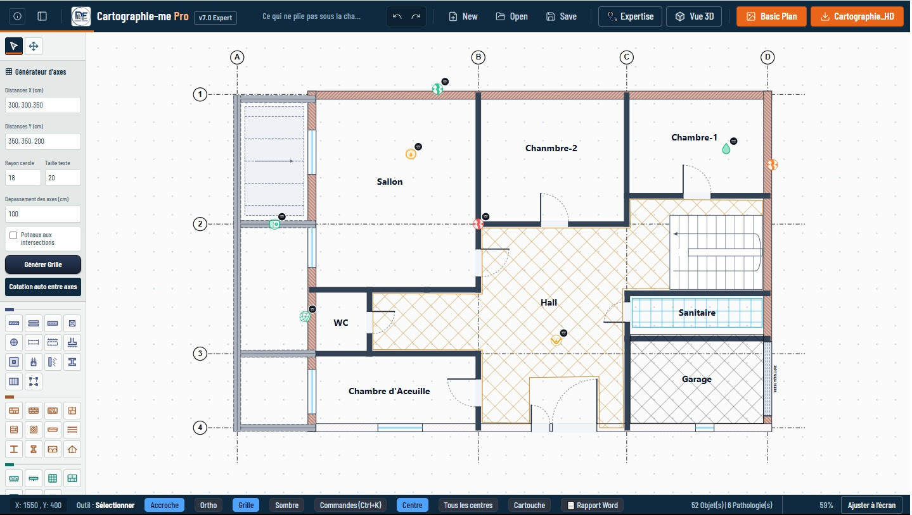
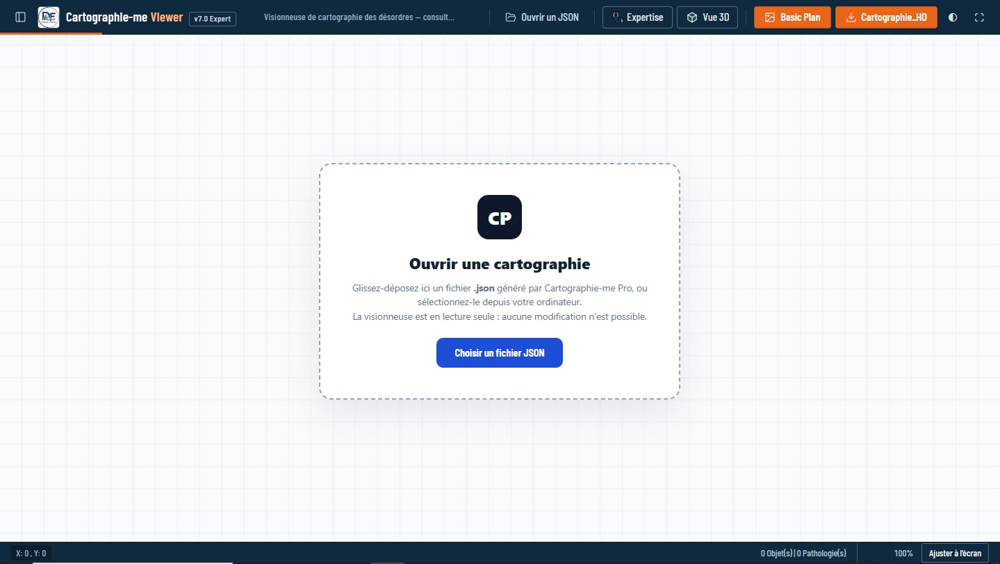
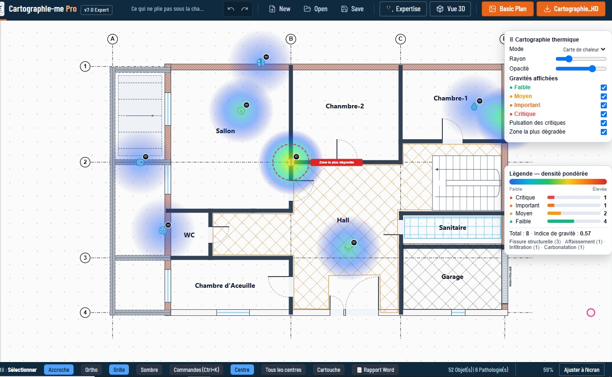
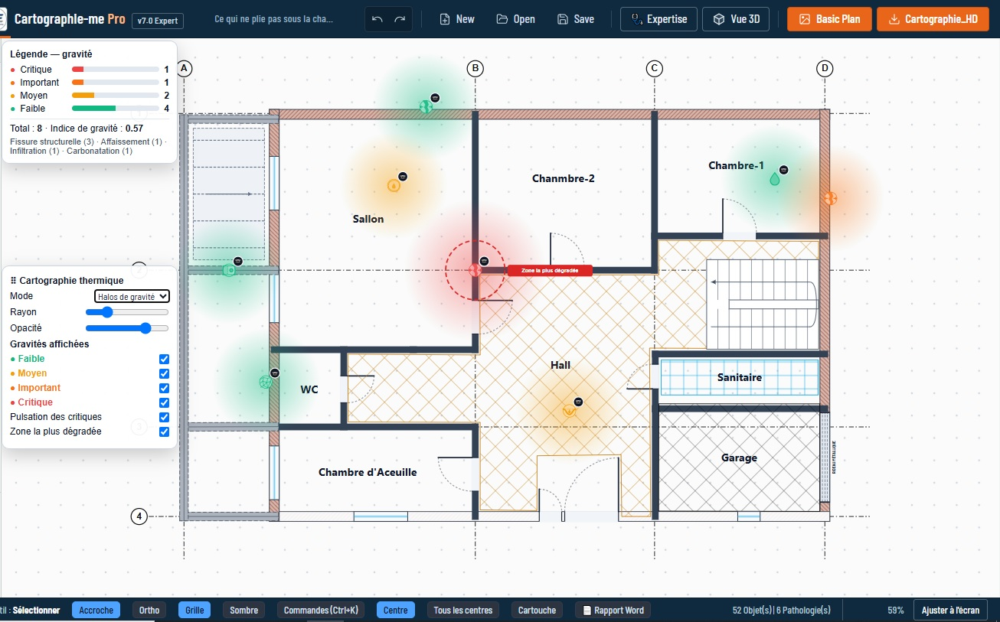
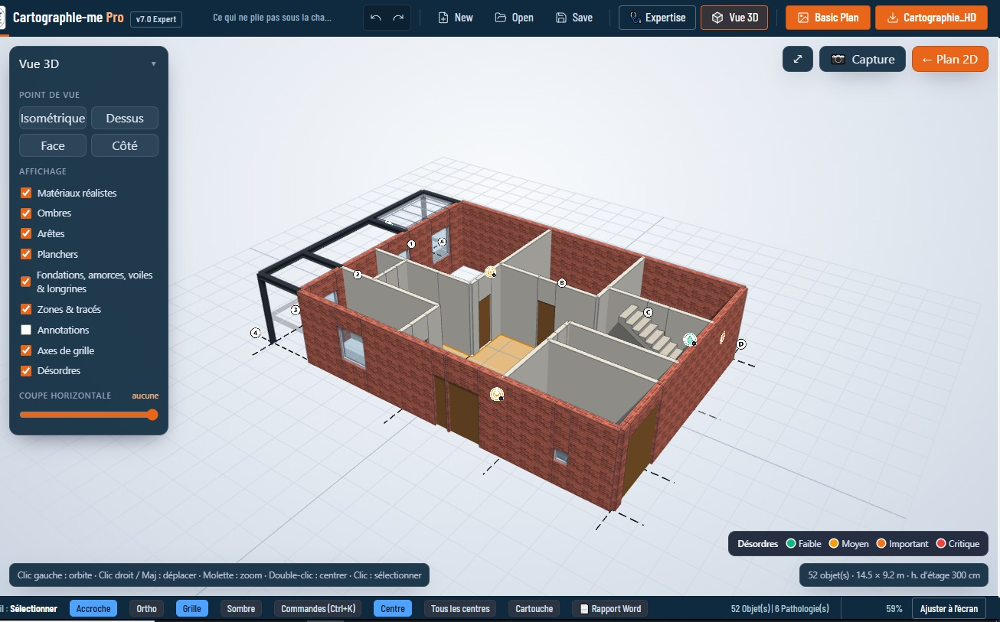
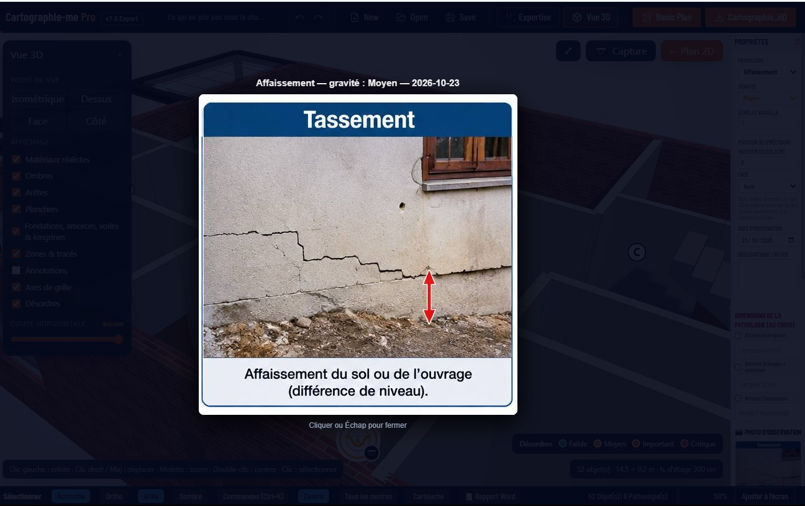
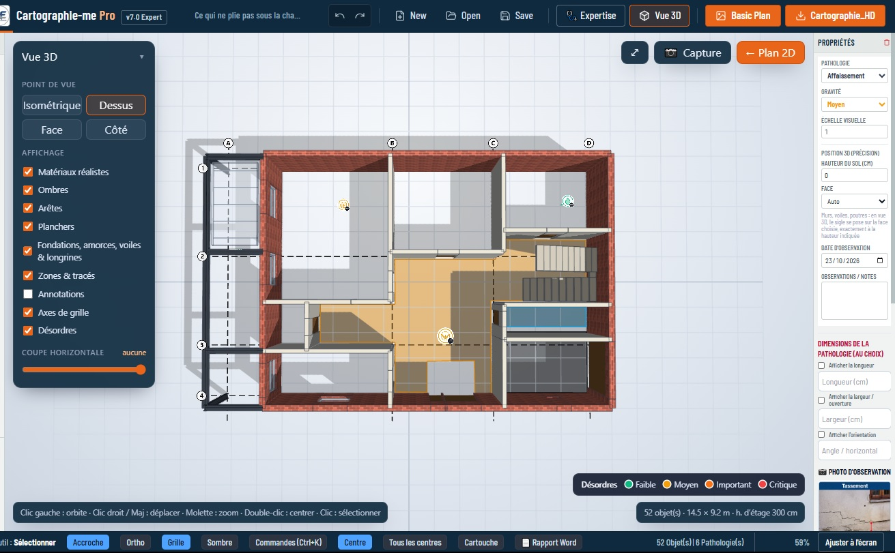
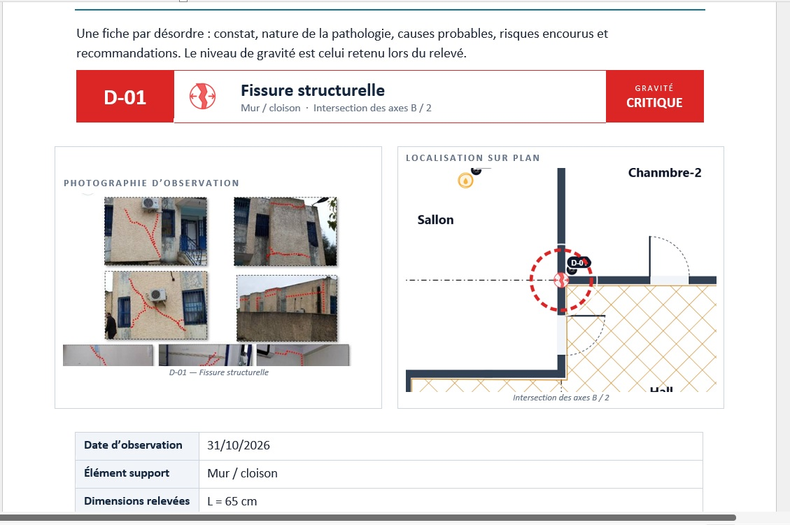

Deux applications complémentaires : un éditeur pour produire des plans et des cartographies de désordres de qualité professionnelle, et une visionneuse qui permet au maître d’ouvrage de lire le travail de l’expert, désordre par désordre.
Découvrir les applicationsNotre visionAujourd’hui, un rapport d’expertise reste souvent opaque pour celui qui le commande. Cartographie-me part d’un constat simple : ce qui est bien dessiné se comprend.
La maîtrise des logiciels de DAO/CAO varie fortement d’un ingénieur à l’autre, et la qualité des plans en pâtit.
Un contenu irréprochable perd de sa force face à des croquis approximatifs. La forme sert le fond.
Produire une vue en plan ou un plan de coffrage mobilise trop d’énergie pour qui n’est pas dessinateur.
Sans support clair, le maître d’ouvrage ne mesure ni l’ampleur ni la gravité des désordres.
Elles fonctionnent dans le navigateur, sans installation lourde, et échangent leurs données par un fichier JSON.
Le moyen le plus simple de réaliser des dessins de qualité et une cartographie de désordres professionnelle, quel que soit le niveau en CAO.


Elle ouvre le fichier JSON généré par l’éditeur. Le client se connecte et consulte le travail de l’ingénieur expert, sans avoir besoin de savoir dessiner ni de lire un plan complexe.
Un parcours continu entre l’expert, le maître d’ouvrage et le bureau d’études.
L’ingénieur expert dessine l’ouvrage et situe chaque désordre dans l’éditeur.
Nature, gravité, photos et observations sont renseignées pour chaque désordre.
Un fichier JSON est généré et remis au client avec la visionneuse.
Le maître d’ouvrage visualise l’ouvrage, mesure l’ampleur des désordres et bâtit sa feuille de route.
Le BET s’appuie sur une cartographie précise pour définir les solutions adaptées.
Pour les ingénieurs comme pour les maîtres d’ouvrage.
Débutant ou dessinateur chevronné : le rendu final est le même, un plan net et professionnel.
Des cartographies standardisées renforcent la rigueur perçue et la valeur du rapport.
L’ingénieur se concentre sur l’analyse et le diagnostic plutôt que sur l’interface d’un logiciel.
Informé et autonome, le maître d’ouvrage dialogue d’égal à égal avec les professionnels.
Captures d’écran et photos du projet.






Les deux applications et le contenu de cette présentation ont été conçus et réalisés par Boudeffa Khaled, ingénieur auprès du CDE-Skikda (Centre de Diagnostic & Expertise).
Développées par ses propres moyens, elles répondent à une philosophie claire : démocratiser la production de plans techniques et rendre l’excellence visuelle accessible à tous.